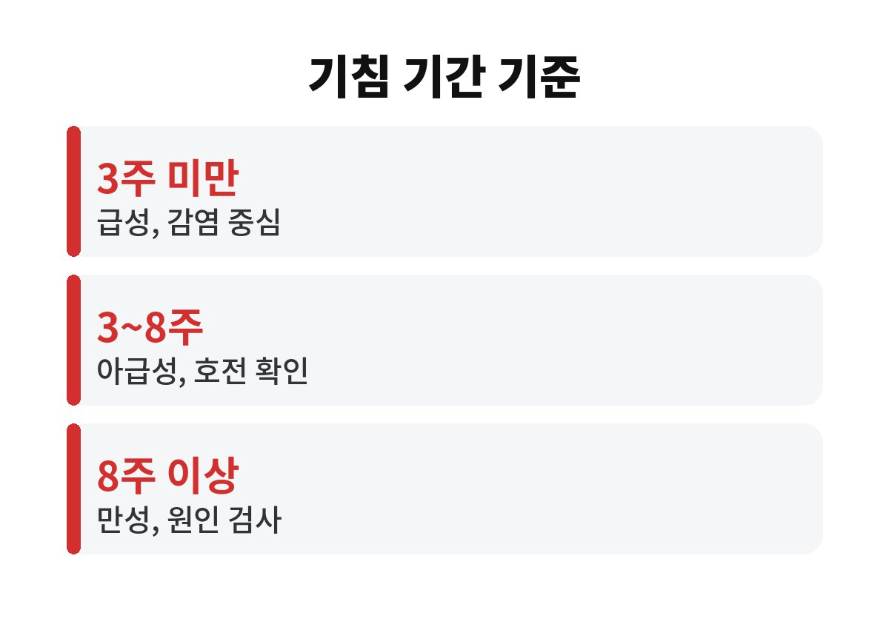
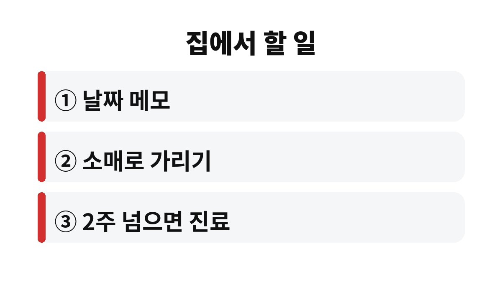

기침 2주가 지나도 줄지 않으면 단순 감기 뒤 기침으로만 보지 말고 기간별 기준에 맞춰 원인을 따져 봐야 한다.
기침은 지속 기간에 따라 3주 미만 급성, 3~8주 아급성, 8주 이상 만성으로 나누는 것이 일반적이다.
같은 기침이라도 몇 주째인지에 따라 의심하는 원인과 찾아갈 곳이 달라진다.
감기를 앓고 열과 콧물은 가라앉았는데 기침만 남는 경우가 흔하다.
이런 감염 후 기침은 기관지 점막이 회복되는 동안 예민한 상태가 이어져 생기며, 몇 주 가는 경우도 드물지 않다.
다만 기간이 길어질수록 다른 원인을 함께 봐야 한다.
| 기침 기간 | 분류 | 흔히 보는 원인 | 할 일 |
|---|---|---|---|
| 3주 미만 | 급성 | 감기, 독감 같은 호흡기 감염 | 휴식·수분, 악화 시 진료 |
| 3~8주 | 아급성 | 감염 후 기관지 과민, 백일해 등 | 호전이 없으면 내과·호흡기내과 진료 |
| 8주 이상 | 만성 | 후비루, 천식, 위식도역류, 복용 약물 등 | 원인 검사를 위해 진료 |
예를 들어 열이 내린 지 열흘이 지났는데도 밤마다 기침 때문에 잠이 깬다면 아급성 구간에 들어선 것으로 보고 진료 시기를 앞당겨 생각한다.
반대로 기침 2주 안에서 가래가 줄고 낮 기침이 잦아든다면 회복 중인 흐름으로 볼 수 있다.

표의 기간은 진단 기준이 아니라 진료실에서 원인을 좁히는 출발점이다.
내 기침이 몇 주째인지 날짜를 세어 두면 진료 때 설명하기가 쉽다.
질병관리청은 기침이 2주 이상 이어지면 결핵 검사를 받아 볼 것을 안내한다.
결핵은 초기에 감기와 구분이 어려워 기침만 오래 가는 사람이 뒤늦게 발견하는 경우가 있다.
흉부 방사선 검사는 가까운 병·의원에서 받을 수 있다.
기침과 함께 피가 섞인 가래가 나오거나 숨이 차고 가슴이 아프면 기간과 상관없이 바로 진료를 받는다.
열이 며칠째 내리지 않거나 체중이 이유 없이 줄고 밤에 식은땀이 나는 경우도 마찬가지다.
집에서 버티며 지켜볼 상황이 아니다.
가래의 색만으로 세균 감염 여부를 가를 수는 없다.
노란색이나 초록색 가래가 나왔다고 곧바로 항생제가 필요한 것도 아니어서, 약 처방은 진료로 판단한다.
아이나 고령자, 만성 폐질환이 있는 사람은 기간을 기다리지 말고 일찍 진료받는 쪽이 안전하다.
코 뒤로 가래가 넘어가는 느낌이 있으면 비염이나 부비동염에서 오는 후비루 기침일 수 있다.
누우면 심해지고 식후 신물이 올라오면 위식도역류가 원인인 경우가 있다.
밤이나 새벽에 쌕쌕거리고 찬 공기에 기침이 터지면 천식을 의심해 볼 만하다.
혈압약 가운데 일부는 마른기침을 일으키는 것으로 알려져 있다.
다만 약은 기침이 난다고 스스로 끊지 말고 처방한 의사에게 증상을 알리고 조정을 받아야 한다.
이 원인들은 겹치기도 하고, 집에서 기침 양상만으로 가려내기는 어렵다.
그래서 8주를 넘기기 전이라도 2~3주 지나 호전이 없으면 진료를 받는 쪽이 시간을 아낀다.
백일해는 기침이 오래 이어지는 호흡기 감염병으로 알려져 있어, 성인도 2주 넘는 발작성 기침이 있으면 의료진에게 그 사실을 말한다.
집에 영유아가 있다면 기침하는 사람은 아기 가까이에서 마스크를 쓴다.
실내 습도를 40~60% 안에 두면 목 점막이 마르는 것을 줄일 수 있다.
물은 자주 나눠 마시고 담배 연기와 향이 강한 방향제는 피한다.
예를 들어 아침에 일어나자마자 마른기침이 터진다면 침실 습도계부터 확인한다.

기침이 낫는 속도는 사람마다 달라서 3주 가까이 남는 경우도 있다.
그래도 2주를 넘겼다면 날짜 메모를 들고 병원에 가는 것이 다음 행동이다.
약국 약으로 오래 버티기보다 원인을 확인하는 편이 빠르다.
참고 자료: 질병관리청 「결핵 예방·검진 안내, 기침 2주 이상 시 검사」(2026년 11월 확인) · 질병관리청 국가건강정보포털 「기침」 기간별 분류(2026년 11월 확인)
※ 2026년 기준 공식 기준을 바탕으로 정리한 일반 건강 정보이며, 증상이 계속되거나 지병이 있다면 전문의와 상담하길 바란다.